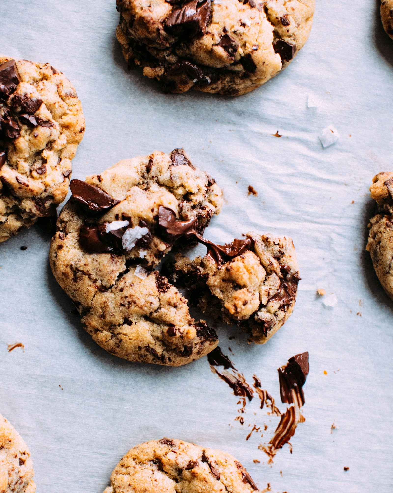

Cookies
A sweet place to start, from seasonal cookies to sandwich-cookie creations.
Ask about today’s selectionA LITTLE WILD. A LITTLE SWEET.
Meet Feral Gnome Bakeshop, a small, home-based bakery in Burlington, Vermont.
BURLINGTON, VERMONT ✦ BAKED GOODS WITH CHARACTER

A TASTE OF THE STORY
Some of the bakes featured in local coverage.
Ask the bakery what’s available now.
A sweet place to start, from seasonal cookies to sandwich-cookie creations.
Ask about today’s selectionA familiar favorite from the Nunyuns days, carried into a new baking chapter.
Discover the storyLemon tea cakes are among the small treats highlighted by local food reporting.
Get in touchThis is a concept showcase, not a current menu. Selection, prices, allergens and availability must be confirmed directly with the bakery.
ROOTED IN BURLINGTON
From Nunyuns to Feral Gnome.
After Nunyuns Bakery & Café closed, co-owner Paul Bonelli began a smaller, home-based baking venture: Feral Gnome Bakeshop.
Local reporting describes baked goods supplied to neighborhood shops, with limited direct orders as availability allows. Check the bakery’s social channels for its own updates.
Read the story in Seven Days ↗FOLLOW THE CRUMBS
For current offerings and inquiries, contact Feral Gnome Bakeshop directly.
No checkout, reservations or orders are processed on this concept site.
feralgnomebakeshop@gmail.com
Burlington, Vermont · Home-based bakery
No walk-in storefront or opening hours are advertised here.